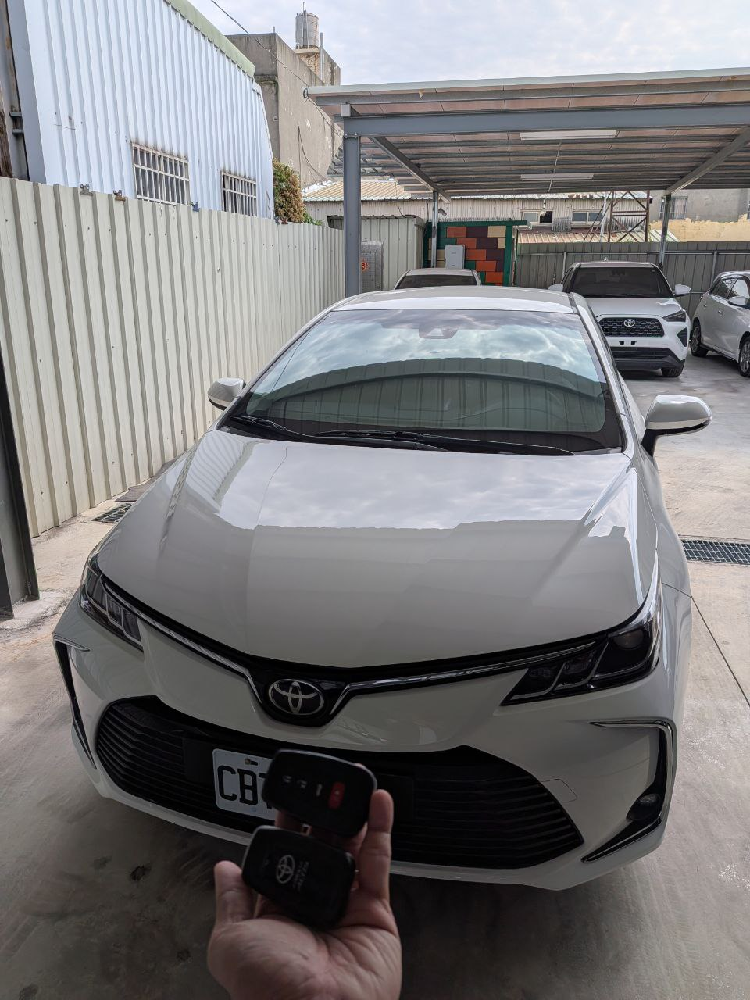

實戰現場：台中清水客戶停車場，執行 Altis 智能系統解碼
當「神車」失去啟動權：免拖吊的技術優勢
作為全台銷量領先的 Toyota Altis，其 2020 年式搭載了更為先進的智慧感應進入與啟動系統。當車主不慎將所有智能鑰匙遺失時，傳統做法是聯繫原廠，但往往面臨的是：高昂的更換電腦費用，以及長達一週以上的訂貨等待期。
極致核心 ProCore 改變了這個繁瑣流程。我們抵達台中清水現場後，透過高階診斷設備直接對接防盜電腦，在不到 40 分鐘內即完成了數據重構與兩支全新智能鑰匙的匹配。
快速應對
清水地區緊急預約，行動工作站 30 分鐘內抵達現場，立即啟動解碼流程。
原廠級匹配
使用專用智能晶片，確保 Keyless 感應、按鍵開鎖、一鍵啟動功能完全同步原廠規格。
技術細節：不只是開鎖，更是數據修復
針對 Toyota 2020 年後的加密協議，我們採用非破壞性的解碼方式。在重構數位鑰匙 ID 的同時，我們也協助客戶將遺失的舊鑰匙權限從系統中清除，確保車輛安全無虞。
需要 Toyota 智能救援？
立即預約：0909-277-670